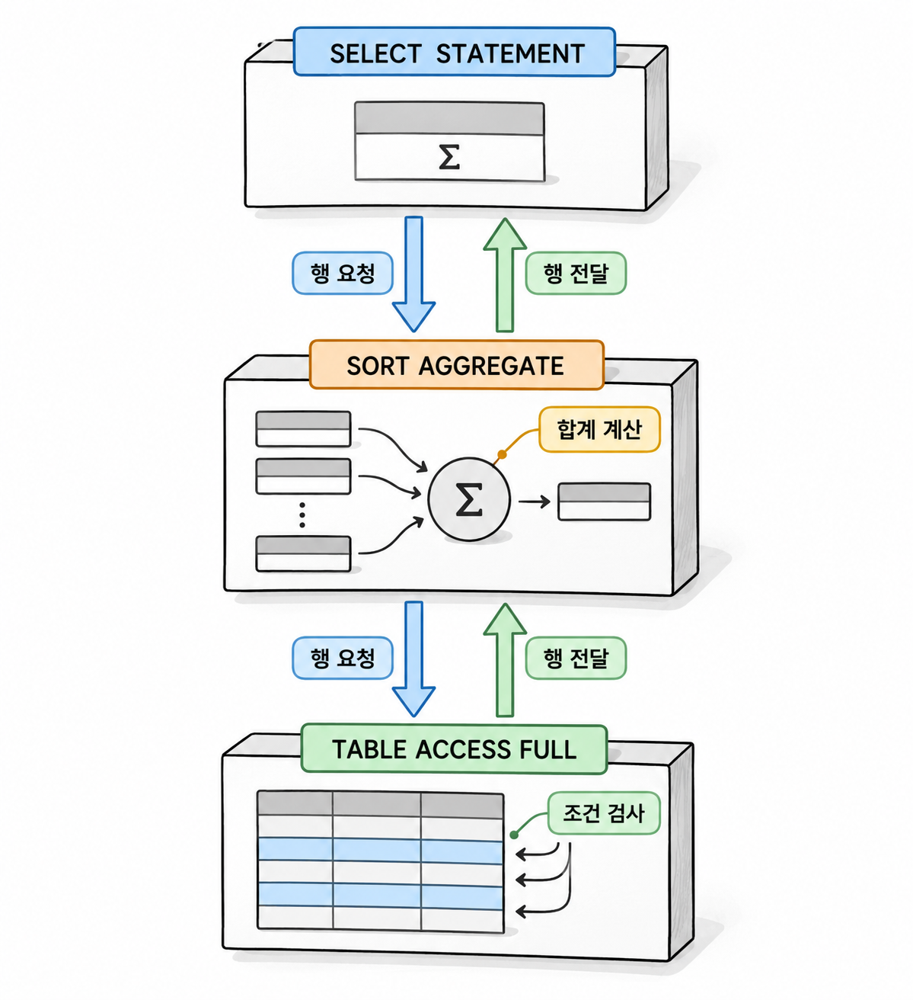
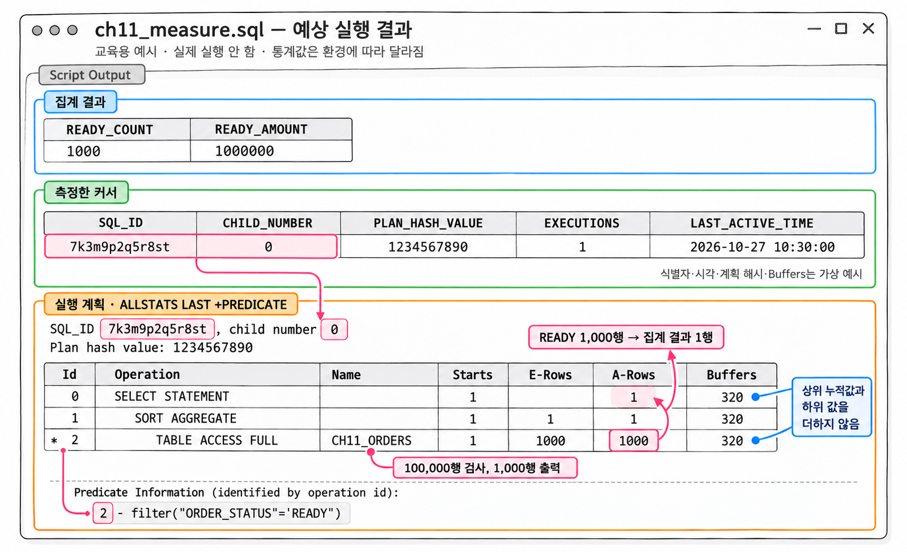

11장. 실행 계획과 성능 측정이란?
1. 실행 계획 읽기
1.1 연산 트리와 데이터 전달 순서
실행 계획(execution plan)은 Oracle이 SQL을 실행할 때 선택한 연산과 그 연결 구조입니다. 어떤 테이블에서 행을 읽고, 어디에서 조건을 적용하는지 보여 줍니다. 정렬과 집계를 하는 위치도 확인할 수 있습니다.
10장에서 다룬 옵티마이저의 선택을 실행 계획에서 확인할 수 있습니다. 다만 연산 이름만으로 성능을 판단할 수는 없습니다. 같은 연산도 읽는 데이터의 양과 반복 횟수에 따라 비용이 달라집니다.
실행 계획은 들여쓰기로 부모와 자식의 관계를 나타냅니다. 자식 연산이 만든 행을 부모 연산이 받아 다음 작업을 합니다. 행을 읽어 상위 연산에 전달하는 실행 단위를 행 소스(row source)라고 합니다.
| 연산 | 하는 일 |
|---|---|
TABLE ACCESS FULL | 테이블을 전체 스캔하여 조건에 맞는 행을 전달합니다. |
INDEX RANGE SCAN | 인덱스의 일정 범위를 탐색합니다. |
TABLE ACCESS BY INDEX ROWID | 인덱스에서 얻은 ROWID로 테이블 행을 찾습니다. |
SORT ORDER BY | 입력받은 행을 정렬합니다. |
SORT AGGREGATE | 입력받은 행으로 전체 집계값을 계산합니다. |
Id는 연산을 구별하는 번호입니다. 실행 순서를 나타내지 않으므로 작은 번호부터 읽으면 안 됩니다. 들여쓰기로 연결 구조를 확인한 뒤, 하위 연산이 만든 행을 어디로 전달하는지 따라가야 합니다.

그림 11-1에서 테이블 접근 연산은 조건에 맞는 행을 집계 연산에 넘깁니다. 집계 연산은 입력이 끝나야 최종 합계를 반환합니다. 반면 일부 연산은 입력을 받는 도중에도 결과를 넘길 수 있습니다. 따라서 실행 계획을 “맨 아래 줄부터 한 번씩 실행한다”는 방식으로 읽어서는 안 됩니다.
1.2 접근 조건과 필터 조건
실행 계획 아래의 Predicate Information에는 각 연산에서 사용하는 조건이 표시됩니다. 조건 앞의 번호는 실행 계획의 Id와 연결됩니다. Id 옆의 별표는 해당 연산에 조건 정보가 있다는 표시입니다.
접근 조건(access predicate)은 읽을 대상을 찾거나 조인할 행을 연결하는 데 쓰입니다. 필터 조건(filter predicate)은 연산이 읽은 후보에서 조건에 맞지 않는 행을 제외하는 데 쓰입니다.
| 표시 | 인덱스 접근에서의 대표적인 의미 |
|---|---|
access(...) | 탐색할 키 범위 등을 정하는 조건 |
filter(...) | 읽은 인덱스 항목이나 테이블 행을 걸러 내는 조건 |
예를 들어 주문번호로 인덱스를 탐색하고 주문 상태를 테이블에서 검사할 수 있습니다. 이때 주문번호 조건은 인덱스 연산의 접근 조건에 나타날 수 있습니다. 상태 조건은 테이블 연산의 필터 조건에 나타날 수 있습니다.
필터 조건이라고 해서 항상 테이블에서 검사하는 것은 아닙니다. 인덱스 안에 필요한 컬럼이 있으면 인덱스 연산에서 검사할 수도 있습니다. 조건의 종류와 함께 조건이 붙은 연산을 확인해야 합니다.
access가 항상 인덱스의 시작 위치를 뜻하지는 않습니다. 해시 조인의 연결 조건도 access로 표시될 수 있습니다. 각 표시는 해당 연산의 역할과 함께 해석합니다.
1.3 EXPLAIN PLAN과 실제 실행 커서의 차이
EXPLAIN PLAN은 대상 SQL을 실행하지 않고 실행 계획을 생성합니다. 생성한 계획은 PLAN_TABLE에 저장하며, DBMS_XPLAN.DISPLAY()로 표시합니다.
기본 문법
EXPLAIN PLAN SET STATEMENT_ID = '구분값' FOR
대상_SQL;
SELECT *
FROM TABLE(
DBMS_XPLAN.DISPLAY('PLAN_TABLE', '구분값', 'TYPICAL')
);이 계획은 설명 시점의 환경에서 옵티마이저가 선택한 계획입니다. 실제 실행 때의 바인드 변수, 통계, 세션 설정 등이 다르면 다른 계획을 사용할 수 있습니다. Rows, Cost, Time도 실제 측정값이 아닙니다.
실행한 SQL을 분석할 때는 커서 캐시에 남은 실행 커서를 확인합니다. DBMS_XPLAN.DISPLAY_CURSOR()는 해당 커서의 계획을 보여 줍니다. 연산별 실행 통계까지 수집했다면 예상 행 수와 실제 행 수를 함께 볼 수 있습니다.
| 구분 | EXPLAIN PLAN | DISPLAY_CURSOR |
|---|---|---|
| 대상 SQL 실행 | 실행하지 않음 | 실행한 커서를 대상으로 함 |
| 계획의 출처 | PLAN_TABLE | 커서 캐시 |
| 연산별 실제 통계 | 없음 | 수집한 경우 표시 가능 |
| 주된 용도 | 실행 전 계획 검토 | 실행 후 동작과 읽기량 분석 |
실제 실행 커서를 보더라도 결과를 일부만 인출했다면 통계도 그 범위의 작업을 반영합니다. 계획의 출처와 실행 완료 여부를 함께 확인해야 합니다.
2. 실제 실행 통계 확인
2.1 실행 통계 수집과 필요한 권한
연산별 실행 통계(runtime statistics)는 각 연산이 실제로 몇 행을 반환했는지 보여 줍니다. 연산을 시작한 횟수와 읽기량도 확인할 수 있습니다. 10장의 옵티마이저 통계는 계획 선택을 위한 자료입니다. 실행 통계는 선택한 계획이 실제로 한 일을 측정한 자료입니다.
이 장에서는 측정할 SQL에 GATHER_PLAN_STATISTICS 힌트를 붙입니다. 힌트는 SQL에 추가하는 옵티마이저 관련 지시입니다. 여기서는 접근 경로를 강제하지 않고 연산별 통계를 수집하는 데 사용합니다.
코드 조각
SELECT /*+ GATHER_PLAN_STATISTICS */
COUNT(*)
FROM user_tables;세션에 STATISTICS_LEVEL = ALL을 설정하는 방법도 있습니다. 다만 수집 범위와 부하가 늘어날 수 있으므로, 실습에서는 측정할 SQL에만 힌트를 붙입니다.
DISPLAY_CURSOR를 사용하려면 DBMS_XPLAN 실행 권한이 필요합니다. 관련 동적 성능 뷰의 조회 권한도 있어야 합니다. 관리자는 실습 PDB에서 다음 뷰에 대한 SELECT 또는 READ 권한을 확인합니다.
| 조회 대상 | 확인할 정보 |
|---|---|
V$SQL | SQL 식별자, 자식 커서, 누적 실행 통계 |
V$SESSION | 세션과 실행 SQL 관련 정보 |
V$SQL_PLAN | 커서의 실행 계획 |
V$SQL_PLAN_STATISTICS_ALL | 연산별 실행·입출력·메모리 통계 |
관리자가 개별 권한을 부여할 때는 보통 SYS.V_$SQL처럼 실제 뷰 이름을 사용합니다. 실습 계정에는 광범위한 관리자 권한보다 필요한 조회 권한을 부여합니다.
통계가 비어 있으면 권한뿐 아니라 수집 여부도 확인합니다. 이미 끝난 실행에 ALLSTATS LAST를 붙여 조회해도 과거 통계가 새로 만들어지지는 않습니다.
2.2 DBMS_XPLAN.DISPLAY_CURSOR 사용
DISPLAY_CURSOR()는 SQL 식별자와 자식 커서 번호로 대상을 지정할 수 있습니다. SQL 식별자(SQL_ID)는 SQL을 구별합니다. 자식 커서(child cursor)는 같은 SQL에서 실행 환경 등의 차이로 나뉜 커서입니다.
기본 문법
SELECT *
FROM TABLE(
DBMS_XPLAN.DISPLAY_CURSOR(
'SQL_ID',
자식_커서_번호,
'ALLSTATS LAST'
)
);ALLSTATS는 입출력과 메모리 실행 통계를 요청합니다. LAST는 해당 커서의 마지막 실행 통계를 표시합니다. LAST를 생략하면 여러 실행의 누적 통계가 표시될 수 있습니다.
다음 예제는 앞 장의 테이블과 독립적으로 실행합니다. 실습 계정에는 테이블 생성 권한과 저장공간 할당량이 있어야 합니다. 같은 이름의 테이블이 없는 상태에서 한 번 실행합니다.
예제 11-1 — 측정할 주문 데이터 준비하기
파일명: ch11_prepare.sql
CREATE TABLE ch11_orders (
order_id NUMBER(10) NOT NULL,
customer_id NUMBER(10) NOT NULL,
order_status VARCHAR2(10 CHAR) NOT NULL,
order_amount NUMBER(12) NOT NULL,
CONSTRAINT pk_ch11_orders PRIMARY KEY (order_id)
);
INSERT INTO ch11_orders (
order_id,
customer_id,
order_status,
order_amount
)
SELECT level,
MOD(level - 1, 1000) + 1,
CASE
WHEN MOD(level, 100) = 0 THEN 'READY'
ELSE 'DONE'
END,
1000
FROM dual
CONNECT BY level <= 100000;
COMMIT;
BEGIN
DBMS_STATS.GATHER_TABLE_STATS(
ownname => USER,
tabname => 'CH11_ORDERS',
estimate_percent => 100,
method_opt => 'FOR ALL COLUMNS SIZE 1',
cascade => TRUE
);
END;
/
SELECT COUNT(*) AS total_count,
SUM(CASE WHEN order_status = 'READY' THEN 1 ELSE 0 END)
AS ready_count
FROM ch11_orders;실행 결과
TOTAL_COUNT READY_COUNT
----------- -----------
100000 1000READY 주문은 전체의 1%입니다. 이 예제는 컬럼 히스토그램을 만들지 않도록 설정했습니다. 실제 분포와 옵티마이저의 추정이 얼마나 다른지 확인하기 위한 조건입니다.
다음 예제는 SQL Developer의 같은 워크시트에서 스크립트 실행으로 실행합니다. SQL에 붙인 고유한 주석으로 대상 커서를 찾습니다. 실행 중 다른 세션에서는 이 실습 SQL을 실행하지 않습니다.
예제 11-2 — 집계 SQL의 실제 실행 계획 확인하기
이어서: 예제 11-1
파일명: ch11_measure.sql
SELECT /*+ GATHER_PLAN_STATISTICS */ /* ch11_ready_sum */
COUNT(*) AS ready_count,
SUM(order_amount) AS ready_amount
FROM ch11_orders
WHERE order_status = 'READY';
SELECT sql_id,
child_number,
plan_hash_value,
executions,
last_active_time
FROM v$sql
WHERE sql_text LIKE
'SELECT /*+ GATHER_PLAN_STATISTICS */ /* ch11_ready_sum */%'
AND parsing_schema_name = USER
ORDER BY last_active_time DESC, child_number;
SELECT p.plan_table_output
FROM (
SELECT sql_id,
child_number
FROM v$sql
WHERE sql_text LIKE
'SELECT /*+ GATHER_PLAN_STATISTICS */ /* ch11_ready_sum */%'
AND parsing_schema_name = USER
ORDER BY last_active_time DESC, child_number
FETCH FIRST 1 ROW ONLY
) c,
TABLE(
DBMS_XPLAN.DISPLAY_CURSOR(
c.sql_id,
c.child_number,
'ALLSTATS LAST +PREDICATE'
)
) p;실행 결과
첫 번째 조회는 다음 값을 반환합니다.
READY_COUNT READY_AMOUNT
----------- ------------
1000 1000000이어서 SQL 식별자와 자식 커서 목록, 실행 계획이 표시됩니다. 계획에는 수집된 Starts, E-Rows, A-Rows, Buffers 등이 나타납니다. 계획 모양과 측정 수치는 서버 환경에 따라 달라집니다.
이 예제의 마지막 조회는 가장 최근에 활동한 자식 커서를 선택합니다. 후보가 여러 개라면 두 번째 조회의 SQL 식별자와 자식 커서 번호를 확인합니다. 그다음 조회할 대상을 명시해야 합니다.
SQL 식별자를 생략하면 현재 세션에서 마지막으로 실행한 SQL을 대상으로 삼습니다. 도구가 중간에 다른 SQL을 실행하면 예상한 커서가 나오지 않을 수 있습니다. 측정 기록에는 SQL 식별자와 자식 커서 번호를 함께 남기는 편이 안전합니다.
튜닝 실습의 공통 실행 방법
12~20장과 28장의 실행 계획 비교에도 다음 절차를 적용합니다. 실행 통계 조회 권한은 2.1항을 기준으로 준비합니다. 각 준비 예제는 객체가 없는 상태에서 한 번 실행합니다. 조회만 반복할 때는 준비 DDL을 다시 실행하지 않습니다. 데이터를 변경한 실습은 해당 예제의 커밋·롤백 조건을 확인한 뒤 같은 시작 상태로 복원합니다.
측정할 각 SQL에는 다른 SQL과 구별되는 주석을 붙입니다. 주석은 SELECT와 힌트 바로 뒤에 둡니다. 기존 식별용 주석이 있으면 그대로 사용합니다. 예를 들어 첫 측정 SQL은 다음처럼 작성합니다.
SELECT /*+ GATHER_PLAN_STATISTICS */ /* measure_12_2_unique */
o.order_id, o.order_status
FROM ch12_order o
WHERE o.order_id = 120;실제 실습에서는 각 예제의 접근 경로 힌트도 유지합니다. 측정 SQL을 실행하고 정해진 범위까지 결과를 인출한 뒤 다음 조회로 커서를 찾습니다. 목록 전체의 작업량을 비교할 때는 끝까지 인출합니다. Top-N과 페이징은 반환된 페이지의 모든 행을 인출합니다.
SELECT sql_id, child_number, plan_hash_value,
executions, last_active_time
FROM v$sql
WHERE sql_text LIKE
'SELECT /*+ GATHER_PLAN_STATISTICS%/* measure_12_2_unique */%'
AND parsing_schema_name = USER
ORDER BY last_active_time DESC, child_number;조회 조건의 주석은 측정 SQL에 붙인 값으로 바꿉니다. SQL 본문과 실행 시각을 확인해 대상을 선택합니다. 후보가 여러 개면 가장 최근 행이라는 이유만으로 선택하지 않습니다. 선택한 값을 같은 워크시트에서 바인드 변수에 넣습니다.
VARIABLE target_sql_id VARCHAR2(13)
VARIABLE target_child_number NUMBER두 변수에는 조회한 실제 SQL_ID와 CHILD_NUMBER를 각각 대입합니다. 이후 각 예제의 실행 계획 조회에서 DISPLAY_CURSOR의 첫 두 인수인 NULL, NULL을 :target_sql_id, :target_child_number로 바꾸어 실행합니다. 세 번째 인수의 출력 옵션은 예제대로 유지합니다. 이 절차에서 NULL, NULL로 대상을 자동 선택하는 계획 조회는 실행하지 않습니다. 측정 SQL이 바뀔 때마다 두 변수도 다시 지정합니다.
SELECT *
FROM TABLE(
DBMS_XPLAN.DISPLAY_CURSOR(
:target_sql_id,
:target_child_number,
'ALLSTATS LAST +PREDICATE'
)
);부모 연산의 Buffers에 자식의 읽기가 포함되면 두 값을 더하지 않습니다. 전체 읽기량은 최상위 누적값으로 비교하고 하위 값으로 발생 위치를 찾습니다. 변경 전후는 같은 데이터·검색값·인출 범위로 반복 측정합니다. 첫 실행과 반복 실행을 나누고 실행 순서를 바꾸어 캐시 영향을 확인합니다. 공유 서버의 캐시를 강제로 비우지 않습니다.
이 원고의 코드는 실제 Oracle에서 실행 검증하지 않았습니다. 제시한 결과와 계획은 실습 환경에서 확인해야 하며, 공식 문서 전체와 기술 내용을 대조해 검증한 것으로 해석하지 않습니다.

생성형 예시 · 실제 실행 안 함
2.3 E-Rows·A-Rows·Starts·Buffers 해석
실행 통계는 한 컬럼씩 따로 보지 않고 연결해서 읽습니다.
| 컬럼 | 의미 | 확인할 점 |
|---|---|---|
E-Rows | 옵티마이저가 예상한 출력 행 수 | 실제 출력과 얼마나 다른가 |
A-Rows | 실제 출력 행 수 | 상위 연산에 몇 행을 넘겼는가 |
Starts | 연산을 시작한 횟수 | 같은 접근을 얼마나 반복했는가 |
Buffers | 논리적 읽기량 | 결과를 만들기 위해 얼마나 블록에 접근했는가 |
A-Time | 연산의 실제 경과 시간 | 자식 작업을 포함한 시간이 어디에 모이는가 |
A-Rows는 해당 연산이 출력한 행 수입니다. 검사한 모든 행 수를 뜻하지 않습니다. 테이블의 100,000행을 검사하고 1,000행만 통과시켰다면 테이블 연산의 A-Rows는 1,000일 수 있습니다.
예제 11-2에서 테이블 접근 연산은 READY 행을 집계 연산에 넘깁니다. 집계 연산은 주문 1,000건을 입력받아 합계 한 행을 반환합니다. 따라서 집계 연산의 A-Rows = 1을 보고 테이블도 한 행만 읽었다고 해석하면 안 됩니다.
Starts가 여러 번이면 예상과 실제의 비교 단위를 맞춥니다. 일반적인 반복 실행 연산에서 E-Rows는 시작 한 번의 예상 출력입니다. A-Rows는 마지막 SQL 실행 동안의 전체 출력입니다. 따라서 A-Rows ÷ Starts를 E-Rows와 비교하면 추정 오차를 판단하는 데 도움이 됩니다.
다음은 해석을 위한 가정값입니다.
| 연산 | E-Rows | Starts | A-Rows | 해석 |
|---|---|---|---|---|
| 반복되는 하위 접근 | 1 | 500 | 10,000 | 시작 한 번에 평균 20행을 출력함 |
전체 출력 10,000행을 예상 1행과 바로 비교하면 반복 횟수를 놓칩니다. 이 경우 시작 한 번의 예상은 1행이지만 실제 평균은 20행입니다.
Buffers는 서로 다른 블록의 개수가 아닙니다. 같은 블록에 반복해서 접근해도 증가할 수 있습니다. 8장에서 확인했듯 행 하나를 찾을 때도 그 행이 있는 블록에 접근합니다. 반환 행 수가 같아도 블록 방문 횟수에 따라 읽기량이 달라집니다.
상위 연산의 Buffers와 A-Time에는 하위 연산의 작업이 포함될 수 있습니다. 모든 줄의 값을 더하면 중복 계산할 수 있습니다. 연산 사이의 포함 관계를 먼저 확인합니다.
2.4 정렬·해시 작업과 임시공간 사용 확인
정렬과 해시 작업은 PGA의 작업 영역을 사용합니다. 메모리가 부족하면 중간 데이터를 임시공간에 기록하고 다시 읽을 수 있습니다. 이때 최종 반환 행 수가 적어도 입력 데이터와 임시 입출력은 클 수 있습니다.
ALLSTATS LAST 출력에는 작업 영역을 사용하는 연산의 메모리 통계가 표시될 수 있습니다.
| 표시 | 의미 |
|---|---|
OMem | 메모리 안에서 작업을 끝내는 데 필요한 추정 메모리 |
1Mem | 한 번의 디스크 처리 단계로 작업하기 위한 추정 메모리 |
Used-Mem | 실행 때 사용한 메모리와 처리 방식 관련 정보 |
Used-Tmp | 표시되는 경우 실제 임시공간 사용 정보 |
메모리 수치의 단위와 처리 방식 표시는 출력 형식에 맞춰 읽습니다. 예상 계획에 나타나는 TempSpc를 실제 사용량으로 기록해서는 안 됩니다.
더 구체적으로 확인하려면 V$SQL_WORKAREA를 사용합니다. 이 조회에는 해당 뷰의 조회 권한이 추가로 필요합니다. 다음 코드는 조회 형태를 보여 줍니다. 대상 SQL 식별자와 자식 커서 번호를 확인한 뒤 바꿔 넣습니다.
코드 조각
SELECT operation_id,
operation_type,
last_memory_used,
last_execution,
last_tempseg_size
FROM v$sql_workarea
WHERE sql_id = :target_sql_id
AND child_number = :target_child_number
ORDER BY operation_id;OPERATION_ID는 실행 계획의 Id와 연결됩니다. LAST_MEMORY_USED와 LAST_TEMPSEG_SIZE는 바이트 단위입니다.
LAST_EXECUTION이 OPTIMAL이면 메모리 안에서 작업을 끝낸 것입니다. ONE PASS나 MULTI-PASS이면 디스크를 이용한 추가 작업이 발생한 것입니다. LAST_TEMPSEG_SIZE는 마지막 작업에서 만든 임시 세그먼트의 크기입니다. 마지막 작업이 임시공간을 사용하지 않았다면 NULL입니다.
임시공간 사용이 확인되면 먼저 입력 행 수와 행의 폭을 확인합니다. 불필요한 데이터를 정렬하는지, 앞 단계에서 예상보다 많은 행을 만드는지도 봅니다. 이 확인 없이 메모리 설정부터 늘리면 SQL의 원인을 놓칠 수 있습니다.
3. 비교 가능한 성능 측정
3.1 데이터 분포·바인드값·결과 인출 범위 고정
성능 비교는 같은 일을 하는 SQL을 같은 조건에서 실행해야 의미가 있습니다. 변경 전에는 100,000행, 변경 후에는 10,000행인 테이블을 사용했다고 가정합니다. 이때 성능 차이를 SQL 개선의 효과로 설명할 수는 없습니다.
다음 조건을 측정 기록에 남깁니다.
| 조건 | 기록할 내용 |
|---|---|
| 데이터 | 전체 건수, 조건별 분포, 측정 중 변경 여부 |
| 객체 | 테이블·인덱스 정의, 통계 수집 상태 |
| 바인드 변수 | 값과 데이터 타입 |
| 실행 환경 | PDB, 스키마, 주요 세션 설정 |
| 인출 범위 | 전체 결과 또는 정해진 일부 결과 |
| 실행 방식 | 도구, 반복 횟수, 동시 실행 여부 |
같은 조건 컬럼도 값에 따라 반환량이 다릅니다. 예제 11-1에서 READY는 1,000행이고 DONE은 99,000행입니다. READY의 변경 전 실행과 DONE의 변경 후 실행을 비교하면 다른 작업량을 비교하게 됩니다.
SQL Developer 결과 창에 처음 표시된 행만 보고 실행이 끝났다고 판단하지 않습니다. 목록 조회에서는 도구가 일부 행만 먼저 가져올 수 있습니다. 전체 조회 성능을 비교하려면 결과를 끝까지 인출해야 합니다.
반대로 첫 화면의 응답이 목표라면 같은 행 수까지 인출한 시간을 비교합니다. 전체 인출 시간과 첫 화면 시간을 같은 측정값처럼 섞지 않습니다.
기존 조회를 COUNT(*)로 감싸서 반환량만 줄이는 방식도 주의해야 합니다. 필요한 컬럼과 연산이 달라져 다른 계획이 선택될 수 있습니다. 측정할 SQL은 실제 업무에서 실행하는 형태를 유지합니다.
3.2 경과 시간·CPU·읽기량·반환 행 수 비교
한 번 빨랐다는 사실만으로 개선을 확정하지 않습니다. 시간과 작업량을 함께 비교해야 원인을 설명할 수 있습니다.
| 지표 | 확인할 내용 |
|---|---|
| 사용자 체감 경과 시간 | 실행 요청부터 정해진 범위의 결과 수신까지 걸린 시간 |
| DB 경과 시간 | 데이터베이스에서 파싱·실행·인출에 사용한 시간 |
| CPU 시간 | 해당 SQL이 사용한 CPU 시간 |
| 논리적 읽기량 | 블록 접근 작업량 |
| 물리적 읽기량 | 캐시 밖에서 읽어 온 양 |
| 반환 행 수 | 같은 범위와 같은 결과를 비교했는지 여부 |
SQL Developer의 화면 출력 시간에는 네트워크와 도구의 표시 작업도 영향을 줍니다. 데이터베이스 내부의 시간과 사용자 체감 시간을 나누어 기록합니다.
V$SQL에서는 커서 단위의 누적 통계를 확인할 수 있습니다. 예제 11-2 뒤에 다음 파일을 실행합니다.
예제 11-3 — 커서의 누적 측정값 확인하기
이어서: 예제 11-2
파일명: ch11_cursor_totals.sql
SELECT sql_id,
child_number,
plan_hash_value,
executions,
end_of_fetch_count,
rows_processed,
buffer_gets,
disk_reads,
cpu_time,
elapsed_time
FROM v$sql
WHERE sql_text LIKE
'SELECT /*+ GATHER_PLAN_STATISTICS */ /* ch11_ready_sum */%'
AND parsing_schema_name = USER
ORDER BY last_active_time DESC, child_number;실행 결과
대상 커서별로 실행 횟수와 누적 측정값이 표시됩니다. 시간과 읽기량은 실행 환경과 반복 횟수에 따라 달라집니다. 따라서 고정된 수치로 제시하지 않습니다.
CPU_TIME과 ELAPSED_TIME의 단위는 마이크로초입니다. 1,000,000으로 나누면 초가 됩니다. END_OF_FETCH_COUNT는 끝까지 실행·인출한 횟수를 확인하는 데 도움이 됩니다.
한 번의 실행을 측정하려면 같은 자식 커서의 실행 전후 값을 빼야 합니다. 누적값을 그대로 비교하면 이전 실행까지 섞입니다.
| 측정 항목 | 한 실행의 계산 방법 |
|---|---|
| 실행 횟수 | 실행 후 EXECUTIONS − 실행 전 EXECUTIONS |
| 논리적 읽기량 | 실행 후 BUFFER_GETS − 실행 전 BUFFER_GETS |
| 물리적 읽기량 | 실행 후 DISK_READS − 실행 전 DISK_READS |
| CPU 시간 | 실행 후 CPU_TIME − 실행 전 CPU_TIME |
| DB 경과 시간 | 실행 후 ELAPSED_TIME − 실행 전 ELAPSED_TIME |
전후 조회 사이에서 실행 횟수가 1만큼 증가했는지 확인합니다. 같은 커서를 다른 세션도 실행했다면 그 세션의 작업이 함께 집계될 수 있습니다. 커서가 캐시에서 사라지거나 새 자식 커서가 생겼다면 기존 값과 단순 차감해서도 안 됩니다.
이 장의 비교는 직렬 실행을 기준으로 합니다. 병렬 실행에서는 여러 프로세스의 시간이 합산됩니다. 이 때문에 ELAPSED_TIME이 실제 시계로 잰 시간보다 커질 수 있습니다.
Cost가 낮아졌다는 사실은 실제 성능 향상의 증거가 아닙니다. 비용은 옵티마이저의 추정값입니다. 결과가 같은지 확인한 다음 실제 시간과 읽기량을 비교합니다.
3.3 캐시·반복 실행·동시 실행의 영향
첫 실행에서는 필요한 블록을 캐시에 가져오거나 하드 파싱을 할 수 있습니다. 다음 실행에서는 이미 준비된 블록과 커서를 재사용할 수 있습니다. SQL을 바꾸지 않아도 두 번째 실행이 빨라질 수 있는 이유입니다.
물리적 읽기가 줄었다고 논리적 읽기까지 줄어드는 것은 아닙니다. 같은 블록을 캐시에서 반복해서 읽는 작업은 여전히 남습니다. 따라서 캐시 효과와 SQL 자체의 작업량 감소를 구분해야 합니다.
반복 측정에서는 첫 실행과 이후 실행을 나누어 기록합니다. 변경 전후 SQL은 같은 횟수로 실행합니다. 가능하면 실행 순서를 번갈아 배치합니다. 측정 횟수가 충분하면 중앙값과 최솟값·최댓값을 함께 남깁니다.
예를 들어 변경 전 SQL을 모두 실행한 뒤 변경 후 SQL만 실행하면 뒤쪽 측정이 캐시의 이점을 더 받을 수 있습니다. 변경 전·변경 후를 번갈아 실행하면 순서의 영향을 확인하기 쉽습니다.
측정을 위해 공유 서버의 버퍼 캐시나 공유 풀을 임의로 비우지 않습니다. 다른 작업의 실행 조건까지 바뀌기 때문입니다. 캐시가 준비된 상태를 측정했는지, 첫 실행을 측정했는지를 기록합니다.
동시 실행도 결과에 영향을 줍니다. 혼자 실행할 때 빨랐던 SQL도 여러 세션에서는 자원 경쟁의 영향을 받을 수 있습니다. CPU, 저장장치, 작업 영역 메모리를 함께 사용하기 때문입니다. 변경 전후의 동시 실행 수와 부하 조건도 같아야 합니다.
실행 통계 수집 자체에도 부하가 있습니다. 상세 분석 단계에서는 같은 수집 조건으로 비교합니다. 사용자 응답 시간은 실제 운영과 가까운 조건에서 별도로 확인합니다.
4. 연습문제 — 느린 SQL의 병목과 개선 가설 기록
예제 11-1의 데이터를 사용하여 READY 주문 집계와 DONE 주문 집계를 분석합니다. 이번 연습에서는 SQL이나 인덱스를 바로 바꾸지 않습니다. 실제 실행 통계를 근거로 병목 후보와 개선 가설을 작성합니다.
요구사항
- 예제 11-2의 집계 SQL을
READY와DONE에 대해 각각 작성합니다. 두 SQL에는 구별할 수 있는 주석과GATHER_PLAN_STATISTICS힌트를 붙입니다. - 같은 세션 설정에서 실행하고, 각 SQL의 SQL 식별자와 자식 커서 번호를 기록합니다.
ALLSTATS LAST로 실제 실행 계획을 확인합니다.- 테이블 접근 연산의
E-Rows,A-Rows,Starts,Buffers를 기록합니다. - 집계 연산의 출력 행 수와 테이블 접근 연산의 출력 행 수가 다른 이유를 설명합니다.
- 각 SQL을 같은 횟수로 반복 실행합니다. 첫 실행과 이후 실행의 시간·읽기량을 구분합니다.
- 관찰한 사실과 개선 가설을 나누어 보고서를 작성합니다.
보고서는 다음 항목으로 구성합니다.
| 항목 | 작성할 내용 |
|---|---|
| 측정 조건 | 데이터 건수·분포, 실행 환경, 인출 범위, 반복 횟수 |
| 실행 대상 | SQL 본문, SQL 식별자, 자식 커서 번호 |
| 관찰 사실 | 추정 오차, 출력 행 수, 논리적·물리적 읽기량 |
| 병목 후보 | 불필요한 읽기, 반복 접근, 임시공간 사용 등 |
| 개선 가설 | 어떤 작업을 줄이면 나아질 것으로 보는지 |
| 검증 방법 | 고정할 조건과 변경 전후 비교 지표 |
예를 들어 “최종 결과는 한 행이지만 테이블 접근에서 많은 블록을 읽었다”는 관찰입니다. “조건에 맞는 데이터를 찾는 과정의 읽기량을 줄이면 도움이 될 수 있다”는 가설입니다. 가설은 이후 실험으로 확인해야 합니다. 실행 계획만 보고 효과를 확정하지 않습니다.
완료 조건
EXPLAIN PLAN과 실제 실행 커서의 출력을 구분합니다.A-Rows를 검사한 전체 행 수로 해석하지 않습니다.- 반복 연산에서는
Starts를 고려해 예상과 실제를 비교합니다. - 측정값이 한 실행의 값인지 누적값인지 표시합니다.
- 같은 결과와 같은 인출 범위를 기준으로 비교합니다.
- 개선 가설마다 확인할 측정 지표를 제시합니다.